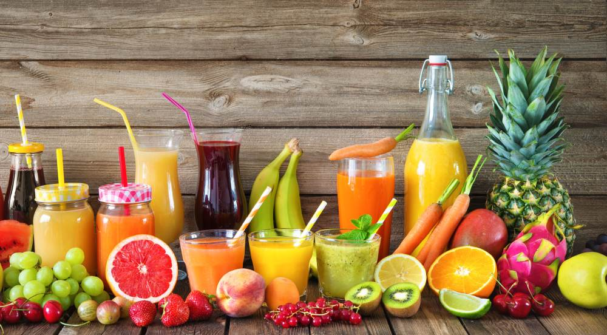
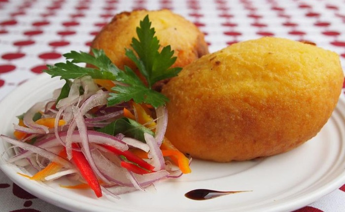
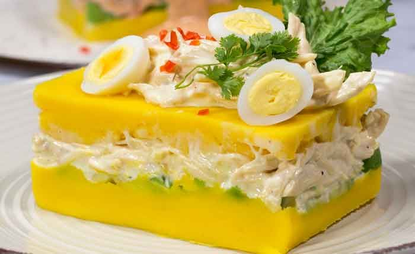
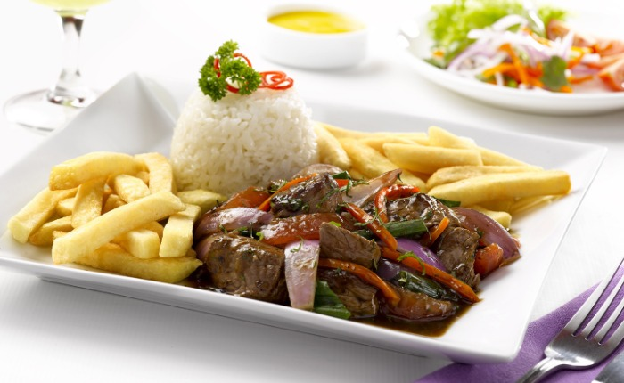

Une Restaurant unique a votre service Restaurant Marcelita
Restaurant Marcelita un monde de saveurs péruviennes, dans d'exquises spécialités du Pérou pour les palais français les plus exigeants.

MENU CARTE À 28.50 €
3 entrées, 4 plats, 4 fromages ou desserts au choix
Les entrées
Pomme de terre à la huancaina
Causa au Lima
Ceviche de fruits de mer
Les plats
Riz avec canard
chicharron de cochon
Lomito sauté
agneau au four
Les Desserts
Riz au lait
Masamorra violet
Picarones
Spécialités

Papa Rellena La pomme de terre farcie est un plat très consommé par les péruviens, la base de ce plat est constituée d'une pâte de pomme de terre et a une garniture de viande mais elle peut aussi être remplacée par du poulet. Il est frit dans une huile abondante pour laisser une couche croustillante..

Causa Limeña La cause de Lima est l'un des plats emblématiques de la gastronomie du Pérou, son ingrédient le plus caractéristique est la pomme de terre jaune. En fait, en dehors des frontières de ce pays, il est connu comme la cause péruvienne.il se compose d'une sorte de galette de purée de pommes de terre farcie de salade de poulet ou de thon à la mayonnaise
CevicheLe ceviche péruvien est un plat traditionnel largement consommé au Pérou. La méthode de préparation est différente de celle du ceviche dans d'autres endroits, utilisant du citron vert, du poisson, des patates douces et d'autres aliments. Le ceviche est préparé à base de poisson cru et de jus de citron, du piment, de coriandre et d'oignon.

Mazamorra Morada La mazamorra la plus connue et la plus consommée au Pérou est la mazamorra morada, élaborée à partir de maïs violet bouilli, accompagné d'épices locales. Ce mets a une origine afro-péruvienne. C'est un plat traditionnel qui est mentionné dans de nombreuses chansons créoles.